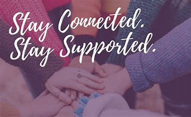
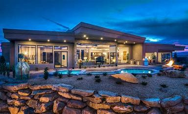

Positive Impacts |
1.Research has shown that because of Covid-19 people are making more friends online. |
2.Due to Covid, online companies thrived and profited a lot especially during lock-down and quarantine. |
3.During Covid, many people's lifestyle has changed as they practised better hygiene. |
4.Because of the virus, people are more innovated to stay connected and help each other. |
5.During this period, blue-chip stocks are becoming the safe bet to invest. |
6.Covid has made remote working companies with little to no physical offices at all turn mainstream. |
7.As per research, the pandemic has made real estate quite affordable espacially the ones in Tier 1 cities. |
8.Due to the pandemic,education is becoming digitalized and the cost is moderate. |